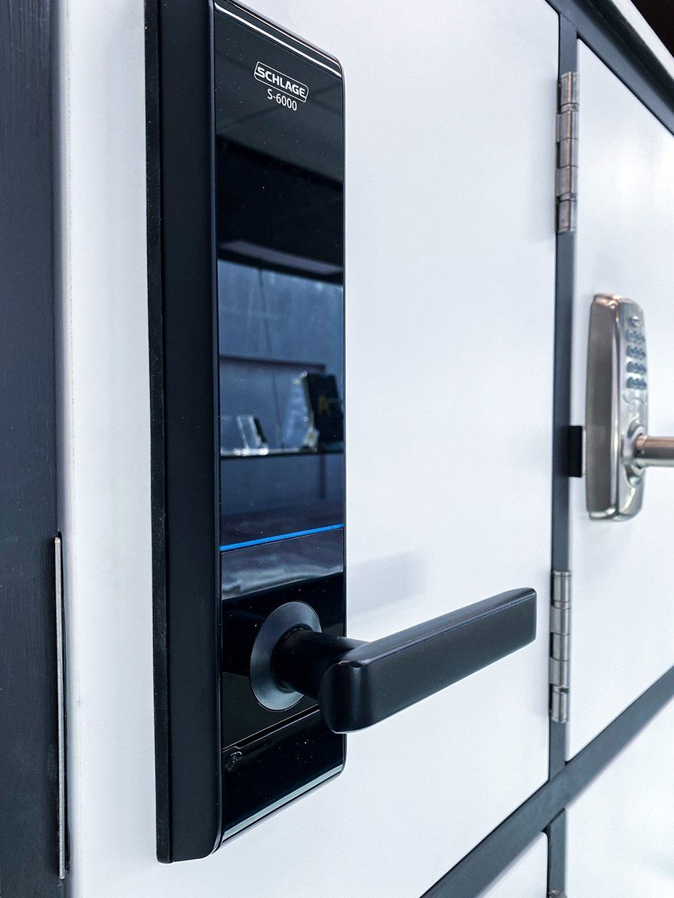
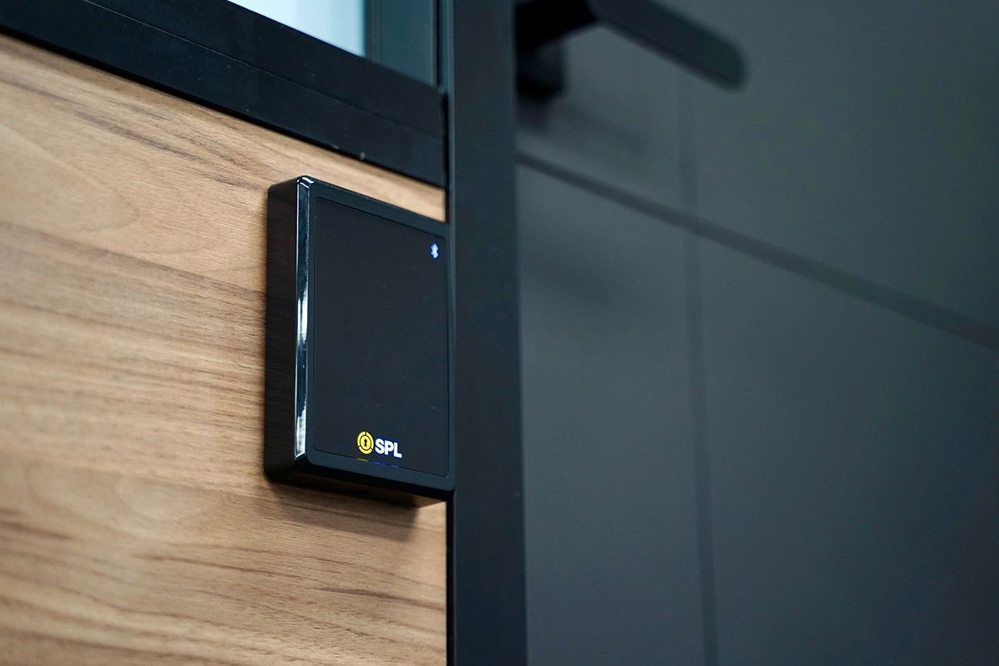

On this page
AT A GLANCE
At SPL Security Solutions, we offer a wide range of intercom systems designed to enhance communication and security for properties in Tweed Heads.
Get A Free Quote Now!
Thank you for contacting SPL Security Solutions.
We will be in touch soon.

Intercom Systems Tweed Heads
At SPL Security Solutions, we offer a wide range of intercom systems designed to enhance communication and security for properties in Tweed Heads. Intercoms provide an effective way to screen visitors, manage deliveries and control access points, making them invaluable for homes, businesses and larger facilities. With growing security needs, intercom systems allow for seamless communication and improved safety.
Whether you need a simple audio intercom or an advanced video system with mobile app control, we customise solutions to meet your specific needs. Our intercoms can integrate with other security measures like CCTV and access control for a truly connected system.
Call us today on (07) 5588 8111 to explore the best intercom options for your Tweed Heads property.
Brisbane homeowners can enhance their security with tailored solutions that include lock upgrades, CCTV systems, and intercoms. Our services are designed to provide peace of mind and ensure your property is well-protected.
Businesses in Tweed Heads benefit from customised security systems and hardware solutions to protect assets and streamline operations. Our offerings include advanced access control systems and high-security locks for effective visitor management.
Our automotive locksmith services in Tweed Heads provide fast solutions for key replacements, lock repairs and ignition issues. Whether you’re locked out or need a transponder key programmed, we deliver efficient assistance to get you moving again.
Restricted key systems in Tweed Heads help manage access to sensitive areas by preventing unauthorised duplication. These systems are ideal for properties requiring enhanced access control.
Protect your valuables in Tweed Heads with durable safes built to resist theft, fire and water damage. We offer full-service support, including installation and maintenance, to keep your safe secure and reliable.
We design tailored security systems in Tweed Heads, integrating intercoms with CCTV, alarms and access control. These systems offer comprehensive protection for both residential and commercial properties.
Secure your property in Tweed Heads with reliable lock hardware. From standard locks to advanced mechanisms, we provide solutions designed for safety and long-term performance.
Improve the functionality and security of your property in Tweed Heads with premium door hardware. Choose from durable handles, hinges and closers that enhance both security and style.
Our premium architectural hardware selection includes fire-rated elements, seamless door closers, and decorative handles, perfect for both contemporary and classic interiors in Tweed Heads.
Key Features of Intercom Systems
Intercom systems are versatile tools for improving communication and security. Here are a few key features:
- Two-Way Communication
Interact with visitors before granting access to ensure complete control over who enters your property. - Video Verification
Advanced intercoms with video functionality let you visually confirm the identity of visitors. - App-Based Access
Manage your intercom system remotely via smartphone, allowing you to monitor and control access from anywhere. - Integration With Security
Intercoms can connect with CCTV, alarms and automated gates for a comprehensive security setup. - Weather-Resistant Designs
Outdoor units are built to withstand harsh conditions, ensuring reliable operation year-round.

Contact Details
24/7 Emergency Locksmiths or Security Tech


Trading Hours
Retail Shop

Frequently Asked Questions
-
Can intercom systems be used in multi-tenant buildings?
Yes, intercom systems are ideal for multi-tenant buildings as they allow each tenant to communicate with visitors and manage access independently. Modern systems can also integrate with keyless entry or access control solutions for added convenience.
-
What are the power requirements for intercom systems?
Most intercom systems run on standard electrical power, with some models offering battery backup to ensure functionality during outages. Wireless options may require regular charging or battery replacement depending on usage.
Locksmith & Security Solutions Gold Coast, Brisbane & Northern NSW